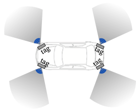
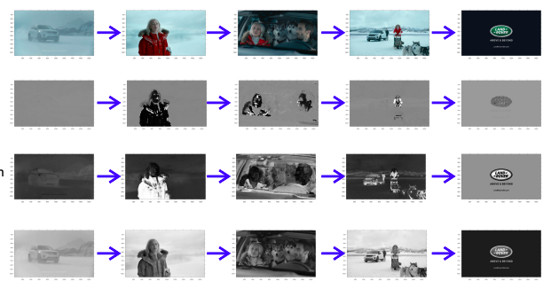

| Embracing Collisions to Increase Fidelity of Sensing Systems withCOTS Tags Jiaqi Xu, Wei Sun, Kannan Srinivasan In Proceedings of the ACM on Interactive, Mobile, Wearable and Ubiquitous Technologies (IMWUT/UbiComp), 2021 |
 | Healthy diapering with passive RFIDs for diaper wetness sensing and urine pH identification Wei Sun, Kannan Srinivasan In ACM International Conference on Mobile Systems, Applications, and Services (MobiSys), 2021 |
|  | Allergie: Relative Vehicular Localization with Commodity RFID System Wei Sun, Kannan Srinivasan IEEE International Conference on RFID, October 2020 |
 | Embracing collisions: enabling parallel channel estimation with COTS passive backscatter tags Jiaqi Xu, Wei Sun, Arjun Bakshi, Kannan Srinivasan Proceedings of the Workshop on Light Up the IoT, October 2020 |
|  | Multimodal content analysis for effective advertisements on Youtube Nikhita Vedula, Wei Sun, Hyunhwan Lee, Harsh Gupta, Mitsunori Ogihara, Joseph Johnson, Gang Ren, Srinivasan Parthasarathy IEEE International Conference on Data Mining, November 2017(ICDM) |
 | Crowdsourcing Sensing Workloads of Heterogeneous Tasks: A Distributed Fairness-Aware Approach Wei Sun, Yanmin Zhu, Lionel M. Ni, Bo Li IEEE Proceedings of ICPP, September 2015 |
 | An efficient distributed algorithm for spectrum allocation in multi-hop cognitive radio networks Wei Sun, Yanmin Zhu 2015 IEEE 23rd International Symposium on Quality of Service (IWQoS), Poster |
 | A distributed spectrum sharing algorithm in cognitive radio networks Wei Sun, Jiadi Yu, Tong Liu IEEE Proceedings of ICPADS, December 2014 |
 | Distributed Spectrum Sharing in Cognitive Radio Networks: A Pricing-Based Decomposition Approach Yanmin Zhu, Wei Sun , Jiadi Yu, Tong Liu , Bo Li International Journal of Distributed Sensor Netowrks, December, 2014 |